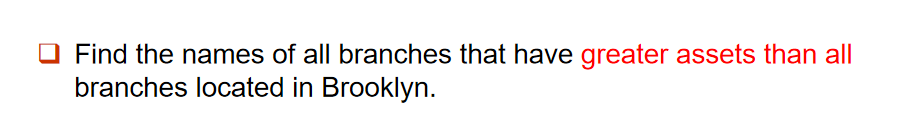

Lesson3
SQL Operations
DDL(Data Definition Language)
- Create/Drop table/index/view/trigger
- Alter table
DML(Data Manipulation Language)
- select from
- insert/delete/update
DCL(Data Control Language)
- Grant/revoke
Data Defintion Language
数据定义语言主要功能：
- 定义关系表的模式(schema)，即由什么属性构成
- 定义值的值域(domain)，
- 约束条件：满分150能考160吗）
- 磁盘上的物理存储方式
Domain Type in SQL
- char(n): 固定长度字符串
- varchar(n)：可变长度字符串，最大长度不超过n
- int
- smallint
- numeric(p,d):定点数，用户指定精度为p位，小数点右边有d位
- real, double:浮点数和双精度浮点数，具有与机器相关的精度。
- float(n):用户指定的精度至少为n位。
- Null value:空值也来辣
- date：日期（年月日）"2007-2-27"
- time：时间（时分秒）"11:12:23"
- timestamp：时间戳:"2011-1-23 11:12:23"
Create Table
CREATE TABLE r (A1 D1, A2 D2, ..., An Dn,
(integrity constraint1),
...,
(integrity constraintk));
- r: 这是表的名称，也就是关系（relation）的名称。在关系型数据库中，一个表就是一个关系。
- A1, A2, ..., An: 这些是表的列（属性）的名字。每个属性代表一个数据字段。
- D1, D2, ..., Dn: 这些是每个属性的数据类型。
- (integrity constraint1), ..., (integrity constraintk): 这些是完整性约束，用于定义数据的规则，确保数据符合要求。
Integrity Contraints iin Create Table
- Not null
- Primary key
- check(P)，P是谓词
- 在 SQL_92 及之后的版本中，PRIMARY KEY 声明会自动确保该属性不为空（NOT NULL）。而在 SQL_89 中，需要显式声明 NOT NULL。

Drop and Alter Table
Drop命令用于删除表。
Alter用于添加/删除关系属性，如ALTER TABLE r ADD A1 D1;表明添加关系的一个属性A1，其类型为D1；ALTER TABLE r DROP A用于删除关系的一个属性(很多数据库不支持)。
同时ALTER也可以用来限定属性，如ALTER TABLE branch MODIFY (branch_name char(30), assets not null);。
Create Index
CREATE INDEX <i-name> ON <table-name> (<attribute-list>);
<i-name>：索引的名称，可以是你自定义的名字。<table-name>：创建索引的表名。<attribute-list>：指定索引所涉及的字段（属性）列表，索引会基于这些字段来提高查询效率。
如：CREATE INDEX b_index ON branch (branch_name);这个语句创建了一个名为 b_index 的索引，在 branch 表的 branch_name 字段上。这个索引可以提高基于branch_name 字段的查询速度。
那字段还是可以是多个的，即Branch_name可以是Branch_man,Branch_name,Branch_114514×，这样查index出来就是多个value了。
UNIQUE INDEX让字段只能唯一，即指定候选键。
DROP INDEX <i-name>删除索引。
Basic Structure
SELECT clause
SELECT A1, A2, ..., An FROM r1, r2, ..., rm WHERE P
A系列指的是属性，r系列指的是关系，P是谓词。
- SQL不区分大小写
- SQL不允许使用"-"，一般用"_"
distinct关键字把重复的去掉，all不去掉，默认是all。
select *表示所有属性。
where从句可用between and not or指定范围。
FROM子句列出查询中涉及的关系。如果在FROM子句中指定了多个关系，则对应于关系代数的笛卡尔积运算。

rename
old_name as new_name如SELECT customer_name, loan_number AS loan_id, amount FROM borrower, loan;实现了将loan_number重命名为loan_id的操作。
string operation
SQL 提供了一个 LIKE 操作符，用于在查询中进行模糊匹配。模糊匹配可以让你根据某种模式来查找字符数据。
+ %：匹配任意数量的字符（包括零个字符）。它就像文件系统中的 *，可以匹配任何字符序列。
+ _：匹配一个单独的字符。它类似于文件系统中的 ?，表示可以是任意字符，但必须是一个字符。
模糊匹配可以在WHERE子句中使用LIKE实现。
这里举了%的例子，注意那个\%，使用ESCAPE '\'使得\作为转义字符，即\%表示的就是%。
使用||实现字符串连接。如：
ordering the display of tuples
使用order by语句实现按什么排列，如：
desc表示降序，asc表示升序，默认是升序。
Duplicates
背景就是需要支持重复数据，因此我们引入多重集：
- 选择操作（\(σ_θ\)）：If there are \(c_1\) copies of tuple \(t_1\) in \(r_1\), and \(t_1\) satisfies selections, there are \(c_1\) copies of \(t_1\) in \(σ_θ(r1)\).
- 投影操作（\(π_A\)）: For each copy of tuple \(t_1\) in \(r_1\), there is a copy of tuple \(π_A(t_1)\) in \(π_A(r_1)\) where \(π_A(t_1)\) denotes the projection of the single tuple \(t_1\).
- 笛卡尔积（\(r_1 × r_2\)）: If there are \(c_1\) copies of tuple \(t_1\) in \(r_1\) and \(c_2\) copies of tuple \(t_2\) in \(r_2\), there are \(c_1 × c_2\) copies of the tuple \(t_1\) \(t_2\) in \(r1 x r2\).
Set Operation
-
并集（\(r_1 ∪ r_2\)）
UNION：UNION ALL返回的是所有元组，包括重复的元组。例如t在r1中出现m次，在r2中出现n次，那么在r1 UNION ALL r2中，t出现m + n次。UNION去除重复，例如t在r1中出现m次，在r2中出现n次，那么在r1 UNION r2中，t仅出现1次。
-
交集（\(r_1 ∩ r_2\)）
INTERSECT：INTERSECT ALL返回的是所有元组，包括重复的元组。例如t在r1中出现m次，在r2中出现n次，那么在r1 INTERSECT ALL r2中，t出现min(m, n)次。INTERSECT去除重复，例如t在r1中出现m次，在r2中出现n次，那么在r1 INTERSECT r2中，t仅出现1次。-
差集（\(r_1 - r_2\)）
EXCEPT： -
EXCEPT ALL返回的是所有元组，包括重复的元组。例如t在r1中出现m次，在r2中出现n次，那么在r1 EXCEPT ALL r2中，t出现max(0, m - n)次。
Aggregate Functions
- avg(col): average value
- min(col): minimum value
- max(col): maximum value
- sum(col): sum of values
- count(col): number of values 非空列数
SELECT avg(balance) avg_bal FROM account WHERE branch_name = 'Perryridge'
这里的avg_bal是别名，也就是显示的列名。
这里阐述的两种写法是都可以的，重写一遍:
SELECT branch_name, count(customer_name) tot_num FROM depositor, account WHERE depositor.account_number=account.account_number GROUP BY branch_name
又SELECT branch_name, count(distinct customer_name) as tot_num FROM depositor D, account A WHERE D.account_number=A.account_number GROUP BY branch_name
HAVING子句
Null Values
The meaning is "missing information" or "inapplicable information", i.e., unknown value or that a value does not exist.
粘性，与NULL算术运算的值返回NULL，与NULL的比较运算返回unknown。
-
OR:
- (unknown or unknown) = unknown
- (unknown or true) = true
- (unknown or false) = unknown
-
AND:
- (unknown and unknown) = unknown
- (unknown and true) = unknown
- (unknown and false) = false
-
NOT:
- (not unknown) = unknown
如果where子句谓词的计算结果为unknown，则将其结果视为false。
提取空值：select loan_number from loan where amount is null，注意这个is，是不能用=的。
聚合函数(除了count)忽略空值。
Nested Subqueries 嵌套查询
SQL为子查询的嵌套提供了一种机制，子查询即是嵌套在另一个查询中的查询。
对于查询最大值，我们这样书写：
select account_number
from account A
where balance >= (select max(balance) from account B where A.branch_name = B.branch_name)
group by branch_name
set comparison
select distinct branch_name
from branch as T ,branch as S
where T.assets > S.assets and S.branch_city="Brooklyn"
some关键字：就是说比较运算，只要有成立的就行。
all关键字，也是比较运算，都得成立。
举个例子

// example 1
select branch_name
from branch
where assets > all(
select assets
from branch
where branch_city = "Brooklyn"
)
// example 2
select branch_name
from branch
where assets > (
select max(assets)
from branch
where branch_city = "Brooklyn"
)
exists
exists在查询到结果不为空的情况返回true，not exists反之。
啊呀，害死我了。
select distinct customer_name
from depositor as S
where not exists ((
select branch_name
from branch
where branch_city = "Brooklyn"
)
except(
select branch_name
from depositor as T , account as R
where S.customer_name = T.customer_name and T.account_number = R.account_number
)
)
\(X-Y=\empty\)等效于\(X\subseteq Y\)。
Views
就是隐藏部分字段不显示，仅展示部分字段。
怎么说呢，就是一个持续稳定输出的select <>, <>, <> from ...，能理解吗？把这种结果用view存起来了(有点类似一个table了都)。
Derived Relations 派生关系
GPT的解释是派生关系产生了一个虚拟的临时表。
举个例子：Example: Find the average account balance of those branches where the average account balance is greater than $500.
select branch_name, avg_bal
from (
select branch_name, avg(balance)
from account
group by branch_name
) as result(branch_name, avg_bal)
where avg_bal > 500
这样避免用了我们最喜欢的having(不是)，其中的result就是虚拟表。
换个写法就是：
select branch_name, avg(balance)
from account
group by branch_name
having avg(balance) > 500
with clause(从句)
WITH 子句允许在查询中定义一个临时的视图或结果集。
WITH max_balance(value) as
SELECT max(balance)
FROM account -- 这里定义了一个临时视图 max_balance
SELECT account_number
FROM account, max_balance
WHERE account.balance = max_balance.value -- 这里用了（
我们再来写一个例子吧xdm，温习一下：
Example: Find all branches where the total account deposit is greater than the average of the total account deposits at all branches.
with total_account(branch_name, sum_balance) as
select branch_name, sum(balance)
from account
group by branch_name
with avg_account(avg_balance) as
select avg(sum_balance)
from total_account
select branch_name, sum_balance
from total_account A, avg_account B
where A.sum_balance > B.avg_balance
继续：Example 2: Find the student names who have enrolled more than 10 courses.
select TT.sno, sname, c_sum
from (
select sno, count(cno) as c_sum
from enroll
group by sno
) as TT, student S
where TT.sno = S.sno and c_sum > 10
Note: The derived table must have its own alias, e.g., TT above. (不管是否被引用，导出表(或称嵌套表)必须给出别名)
最后一个example:
Example 3: Write SQL statement to satisfy each of the following requests.
Given: employee(id, name, age, gender, salary, boss)
(1) Find the employee who is younger than his/her boss and whose
gender is different from his/her boss’s.
(2) Find the employee who has the maximum number of underlings.
之前不大能理解这个boss啥意思，后面知道了是boss的id，类似指针？因此对于第一题：
select name
from employee as e
where e.age < (
select age
from employee as b
where b.id = e.boss
)
and e.gender != (
select gender
from employee as b
where b.id = e.boss
)
underlining是下属，我感觉我得去背单词了不然六级这学期又过不了。
那我一想到如果这个下属不是直系下属，而是间接下属，那不去了，复杂的要死。
SELECT TT.boss, TT.num_underlings
FROM (
SELECT boss, COUNT(*) AS num_underlings
FROM employee
GROUP BY boss
) AS TT
WHERE TT.num_underlings = (
SELECT MAX(num_underlings)
FROM (
SELECT boss, COUNT(*) AS num_underlings
FROM employee
GROUP BY boss
) AS subquery
);
Modification of the Database
Delete
ok，手写example环节：
Example 1: Delete all accounts and relevant information at depositor for every branch located in Needham city.
branch(branch-name(prim), branch-city, assets)
account(account-number(prim), branch-name, balance)
depositor(customer-name(prim), account-number)
Delete from account
where branch_name in (
select branch_name
from branch
where branch_city = "Needham"
)
好像还有一种解法？
Delete from depositor
where account_number in (
select account_number
from branch B, account A
where B.branch_name = A.branch_name
and B.branch_city = "Needham"
)
Example 2: Delete the record of all accounts with balances below the average at the bank.
可能很显而易见地得出：
DELETE FROM account
WHERE balance < (SELECT avg(balance)
FROM account)
我们可以理解这是不正确的，因为每次删除都会改变这个avg(balance)，但是sql利用优化改正了之，在同一SQL语句内，除非外层查询的元组变量引入内层查询，否则层查询只进行一次。这样，实际传出来的avg()是个常数。
Insert
Insert into <table>(...) values(...)
这个table后的(...)可有可无。
update
同理是UPDATE <table | view> SET <c1 = e1 [, c2 = e2, …]> [WHERE <condition>]语句。
阐述了顺序的重要性，使用case应该更好，手写如下：
UPDATE account
SET balance = case
when balance <= 10000
then balance * 1.05
else balance *1.06
end
更新一个视图本质是对表的更新，如：
CREATE VIEW branch_loan as
select branch_name, loan_number from loan
我们如下操作：
INSERT INTO branch_loan
VALUES("man", "L-307")
translate into：
INSERT INTO loan
VALUES("man", "L-307", null)
建立在单个基本表上的视图，且视图的列对应表的列，称为“行列视图”。
Updates on more complex views are difficult or impossible to translate, and hence are disallowed.
- View 是虚表，对其进行的所有操作都将转化为对基表的操作。
- 查询操作时，VIEW与基表没有区别，但对VIEW的更新操作有严格限制，如只有行列视图，可更新数据。
Transaction
事务(transaction)是数据库中的一个操作单元，它由一系列查询和数据更新语句组成。事务确保这些操作要么全部成功，要么全部失败，以保持数据的一致性和完整性。事务有以下几个关键特性：
- 原子性（Atomicity）：事务中的所有操作要么全部完成，要么全部不做。
- 一致性（Consistency）：事务执行前后，数据库的状态必须是有效的。
- 隔离性（Isolation）：事务执行时，其他事务不能干扰。
- 持久性（Durability）：一旦事务完成，它对数据库的修改是永久的。
以下两个操作使得一个事务结束：
- commit work：提交结果并将操作保存
- rollback work：操作全部不生效，回滚
所有操作只要有失败就回滚，之前做的全部重置 --原子性
Joined Relations
连接(join)操作用于将两个关系（通常是两张表）结合起来，基于某种条件返回一个新的关系（新表）。
连接类型（Join Type） 连接类型定义了如何处理那些在连接条件下没有匹配到的元组（行）。
通常来说，如果一个表中的某些元组没有在另一个表中找到匹配的元组，连接类型决定了如何处理这些没有匹配的元组。常见的连接类型包括：
- 内连接（Inner Join）：仅返回两个表中匹配的元组（行）。没有匹配的行会被忽略。
-
外连接（Outer Join）：即使某个表中的行没有与另一个表中的行匹配，也会返回这些行，只是另一表中的相关列会填充为空值（NULL）。外连接又分为：
- 左外连接（Left Outer Join）：返回左表所有的行，即使它们在右表中没有匹配。
- 右外连接（Right Outer Join）：返回右表所有的行，即使它们在左表中没有匹配。
- 全外连接（Full Outer Join）：返回两个表中所有的行，无论它们是否在另一个表中有匹配。